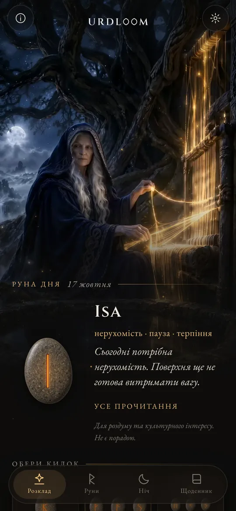
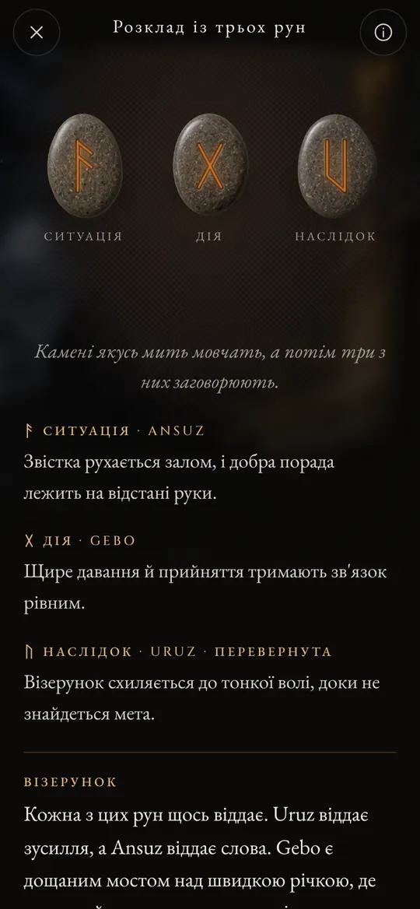
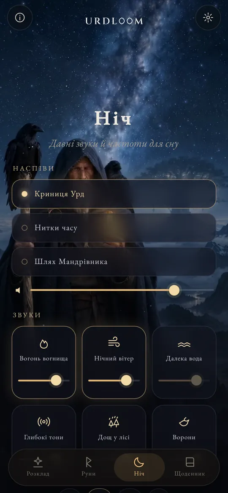
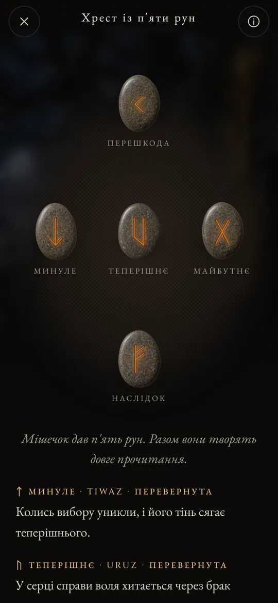

Три жінки сидять біля криниці
У давньоскандинавських поемах три Норни сидять біля криниці під Іґґдрасилем, світовим деревом. Вони поливають його коріння, вирізають знаки на дереві й визначають життя кожного, хто народжується. Найстаршу звуть Урд. Її ім'я означає «те, що сталося», і криниця названа на її честь.
Urdloom названо на честь неї та ткацького верстата (англійською loom), на якому, як казали, тчеться доля. Застосунок зберігає цей настрій: торбинка з каменями в руці, полотно на підлозі й прочитання, написані мовою саг, а не мовою гороскопа.

Звідти приходять діви, що знають багато, три з озера під деревом.Völuspá, строфа 20
Утримай, струсни, відпусти
Утримуй торбинку, і камені застукотять у твоїй руці. Відпусти, і вони полетять на полотно, покотяться, ляжуть і перевернуться один за одним. Під ними з'явиться прочитання.

Одна руна
Один камінь на день, що настає, або на питання, на яке можна відповісти так чи ні. Торкнись, і його кинуто.


Розклад із трьох рун
Ситуація, дія, наслідок. Читай зліва направо, як коротку сагу, а потім усі три разом: нитка наприкінці показує, як вони розмовляють між собою.

Хрест із п'яти рун
Минуле, теперішнє й майбутнє посередині, перешкода вгорі й наслідок унизу, а ти стоїш у самому осерді хреста.




Кожне прочитання написане вручну: двадцять чотири руни, кожна пара і всі 2 024 поєднання по три, кожною з двадцяти двох мов. Поки ти чекаєш, ніщо не створюється машиною.

Двадцять чотири руни
Elder Futhark вважають найдавнішою рунічною абеткою: його вирізали приблизно з II по VIII століття. Двадцять чотири знаки поділено на три родини по вісім, які звуть ætt, і кожна носить ім'я бога, чия руна стоїть на її початку. Торкнись каменя, щоб прочитати його.
Ætt Фрейра
Ætt Хагала
Ætt Тюра
Назви рун усіма мовами збережено в давній формі. Це імена самих знаків, відновлені науковцями за рунічними поемами та найдавнішими абетками.
Коротка історія рун
Насамперед руни були літерами. Германські народи близько півтори тисячі років вирізали їх на дереві, кістці, металі й камені. Ось як до нас дійшли ці знаки та давній звичай кидати жереб.

Жереб на білому полотні
Римський історик Тацит пише, що германці ріжуть гілку плодового дерева на палички, позначають їх знаками й розкидають по білому полотну. Жрець або голова родини піднімає три з них, одну за одною, і тлумачить їх. Він не каже, що знаки були рунами, але саме цей жест зберігає Urdloom.
Перші написи
На кістяному гребені з болота Вімосе в Данії зберігся один із найдавніших відомих рунічних написів, лише одне слово: harja. Наконечники списів, фібули й амулети тих самих століть свідчать, що письмо вже поширилося всією північчю.
Увесь ряд на одному камені
На камені з Кюльвера на Готланді хтось вирізав усі двадцять чотири знаки по порядку, і це найдавніший повний футарк, який ми маємо. Ряд дістав назву від перших шести літер: f, u, th, a, r, k.
Золоті роги
На одному з двох золотих рогів із Галлегуса в Данії вирізано алітераційний рядок: «Я, Hlewagastiz, син Holt, зробив ріг». Це один із найраніших поетичних рядків будь-якою германською мовою.
Шістнадцять знаків для доби вікінгів
У Скандинавії абетку скорочують до шістнадцяти знаків, і так постає Молодший футарк. Його літерами вкрито тисячі пам'ятних каменів, серед них великі камені в Єллінгу в Данії.
Поеми записано
Ісландські писарі записують еддичні пісні. У Völuspá Норни сидять біля криниці Урд, а в Hávamál Одін дев'ять ночей висить на продуваному вітрами дереві й з криком здіймає руни.
Вірш для кожної руни
Рунічні поеми з Норвегії та Ісландії, а разом із ними давніша англосаксонська, дають кожній руні короткий вірш: худоба сіє розбрат між родичами, град найхолодніший із зерен, лід дуже слизький. Чимало з того, що ми знаємо про значення рун, походить саме з цих рядків.
Читати знову
Звертатися до рун заради роздумів почали в наш час, і це відродження спирається на ті самі поеми та на образи Едди. Urdloom відкрито стоїть у цій традиції: він не вдає з себе давнього оракула, а лише дбайливо читає старі знаки.

Давні звуки й частоти для сну
Коли день скінчився, Мандрівник виходить під зорі. Обери наспів, наклади на нього звуки й постав таймер. Звуки грають і з вимкненим екраном, а потім самі стихають.
Три наспіви: «Криниця Урд», «Нитки часу» і «Шлях Мандрівника». В їхній основі горловий спів, рамковий барабан і смичкова тагельгарпа.
Шість шарів для змішування, кожен зі своєю гучністю: вогонь вогнища, нічний вітер, далека вода, глибокі тони, дощ у лісі й ворони.
Кожен звук створено для Urdloom. Ніщо не відтворюється з інтернету.
Дрібниці, які мають значення
- Руна щоранку
- На першому екрані лицем донизу чекає один камінь. Якщо хочеш, щоранку коротка звістка скаже, яку руну витягнуто для тебе.
- Щоденник
- Зберігай прочитання, що знаходять у тобі відгук, разом із питанням, яке ти поставив.
- Прочитання, якими можна поділитися
- Надішли прочитання картинкою: камені такими, якими вони впали, і слова під ними.
- Двадцять дві мови
- Кожну написали й перевірили люди, які нею читають, а шрифт і розмір можна змінювати.
Що відбувається тут, залишається тут
Urdloom працює без інтернету. Немає ні облікового запису, ні реєстрації, ні реклами, немає й жодної аналітики чи стеження. Твої питання, прочитання і щоденник залишаються на твоєму телефоні.
КонфіденційністьПитання
Чи передбачає Urdloom майбутнє?
Ні. Прочитання створені для роздумів і знайомства з культурою. Вони вказують напрям, як колись давні руни, а сенс набуває форми у твоєму власному житті. Ніщо в застосунку не є медичною, фінансовою, юридичною чи іншою професійною порадою.
Чому мова звучить по-старовинному?
Руни прийшли зі світу поем, саг і загадок. Ми навмисно написали прочитання цим голосом і кожною мовою намагалися триматися якомога ближче до рунічної традиції.
Чи потрібен інтернет?
Ні. Усе, від прочитань до нічних звуків, уже є в застосунку.
Які мови доступні?
Англійська, турецька, німецька, французька, іспанська, італійська, португальська, російська, українська, польська, нідерландська, шведська, норвезька, фінська, грецька, арабська, гінді, індонезійська, японська, корейська, китайська та албанська.
Напиши нам
Питання, слово, яке твоєю мовою звучить неправильно, чи прочитання, що не відпускає: ми читаємо кожен лист.
support@urdloom.com